Installation
- Blender › Edit › Preferences › Get Extensions (ou Add-ons) › menu ⌄ en haut à droite › Install from Disk…
- Choisir
BH_Heli_Rig_1.2.2.zippuis valider : le plugin est activé. - Dans une scène, survoler la vue 3D, appuyer sur
Net cliquer l'onglet Black Hawk. - Le panneau indique « Aucun UH-60 dans la scène » : cliquer Télécharger le modèle (une seule fois, environ 190 Mo), puis Ajouter à la scène. L'hélico arrive au curseur 3D avec son rig, ses portes et ses LEDs.
- Si une ancienne version (1.0 ou 1.1) est installée, la désactiver d'abord.
Le téléchargement demande l'accès en ligne de Blender (Preferences › System › Network › Allow Online Access). Sans connexion : récupérer UH60_BlackHawk_1.2.zip et utiliser Installer depuis un fichier. L'archive est vérifiée (taille et empreinte SHA-256) avant installation.
Un fichier fait avec la version 1.1 (portes non animées) reste utilisable : onglet Portes › Ajouter les portes à ce rig.
Prise en main
- Sans hélico dans la scène : télécharger le modèle, puis « Ajouter à la scène ».
- Onglet Animation : choisir Boucle, Démarrage, Arrêt ou Parking, et le régime.
- Onglet Pales : ajuster la flexion et, si besoin, pencher le disque.
- Onglet Vol : régler la hauteur et les petits mouvements du stationnaire.
- Onglet Portes : ouvrir les portes ou animer leur ouverture.
- Onglet LEDs : choisir un préréglage, puis affiner chaque feu.
Animation : Mode d'animation, durée de la boucle et réglage des rotors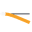
Pales : Flexion, conicité, pas et inclinaison du disque rotor
Vol : Vol stationnaire : hauteur, pompage, dérive, balancement- Portes : Ouverture des portes du cockpit et de la cabine, une par une ou toutes ensemble
- LEDs : Feux de navigation, gyrophares et voyants du cockpit
- Aide : Prise en main, contrôles du rig, documentation et réinitialisation
Chaque section se replie (flèche à gauche du titre). Survoler un réglage affiche son explication en français ; le bouton ? ouvre une fenêtre avec l'illustration et l'explication complète. Le bouton image en haut du panneau affiche ou masque les illustrations.
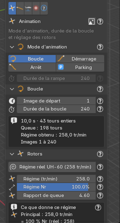
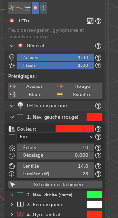
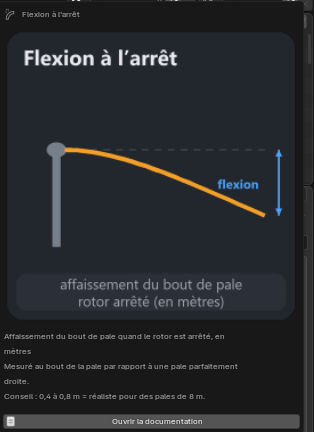
Régime réel des rotors
258 tr/min = 100 % Nr
| Grandeur | Valeur UH-60 | Où la voir |
|---|---|---|
| Rotor principal | 258 tr/min · 4,3 tours/s | Animation › Rotors, et en bas à gauche de la vue 3D |
| Rotor de queue | ≈ 1 190 tr/min (rapport ≈ 4,6) | bloc « Ce que donne ce régime » |
| Bout de pale (rayon 8,17 m) | ≈ 221 m/s · Mach 0,65 | bloc « Ce que donne ce régime » |
| Rotation par image (24 i/s) | 64,5° par image | bloc « Ce que donne ce régime » |
| Aspect à l'écran | 4 pales : semble reculer de 25,5° par image (effet roue de chariot, réaliste) | ligne « À l'écran » |
Le bouton Régime réel UH-60 règle tout d'un clic. En mode Boucle, le régime est arrondi à un nombre entier de tours : avec 240 images à 24 i/s, 43 tours donnent exactement 258,0 tr/min. Pendant un Démarrage ou un Arrêt, la ligne « Image N » et l'affichage de la vue 3D donnent le régime instantané (de 0 à 100 % Nr).
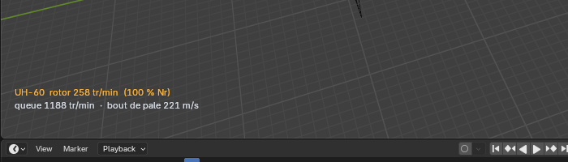
Les portes en un coup d'œil
| Porte | Mouvement | Ouverte (curseur à 1) |
|---|---|---|
| Cockpit gauche (copilote) et droite (pilote) | pivote vers l'extérieur autour des deux charnières avant | 80° (réglable) |
| Cabine gauche et droite | sort de 8,5 cm pendant les premiers 12 % du curseur, puis glisse vers l'arrière | 1,85 m vers l'arrière : le passage de la cabine (≈ 1,7 m sur le vrai UH-60) est dégagé |
L'écart de 8,5 cm est calculé sur le modèle : c'est le plus petit écart pour que la porte glisse sans traverser la carlingue. Animer l'ouverture pose deux images clés (départ adouci, arrivée adoucie) ; on peut aussi survoler un curseur et appuyer sur I.
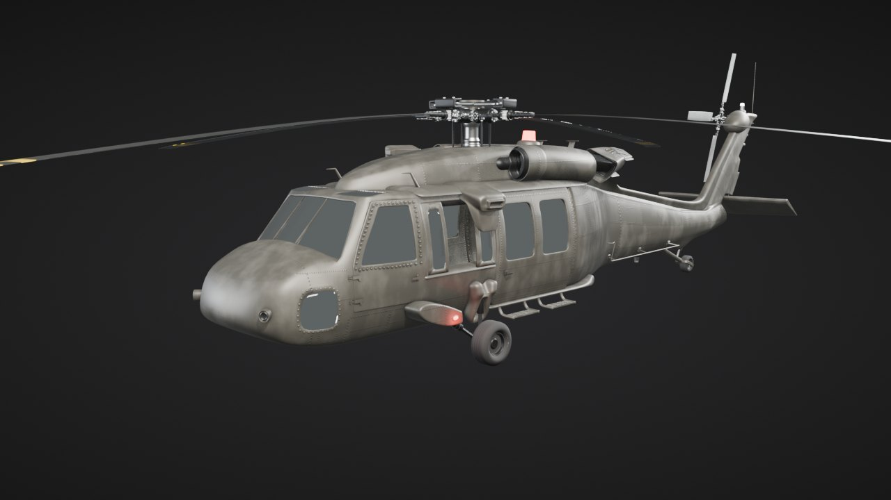
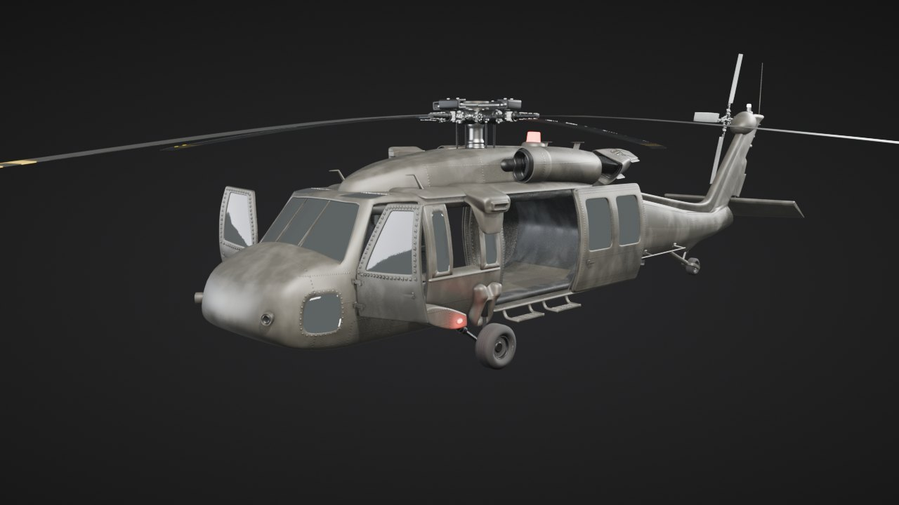
Animation
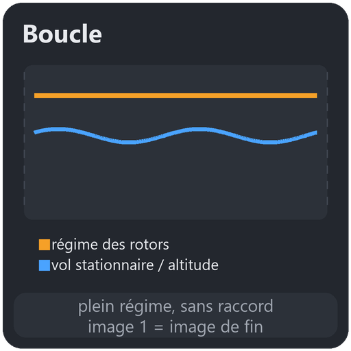
Mode d'animation
Choisit ce que fait l'hélico sur la plage d'images : boucle, démarrage, arrêt ou parking
Un clic crée l'animation des rotors et du vol stationnaire, et cale la plage d'images de la scène.
Boucle : plein régime, à répéter à l'infini sans raccord visible.
Démarrage : les rotors accélèrent puis l'hélico décolle.
Arrêt : l'hélico se pose puis les rotors ralentissent.
Parking : rotors immobiles, pales fléchies sous leur poids.
Boucle
Rotors à plein régime : la dernière image raccorde parfaitement avec la première
Le régime est arrondi à un nombre entier de tours sur la durée de la boucle. Le vol stationnaire et les LEDs utilisent aussi des cycles entiers : la vidéo peut tourner en boucle sans saut.
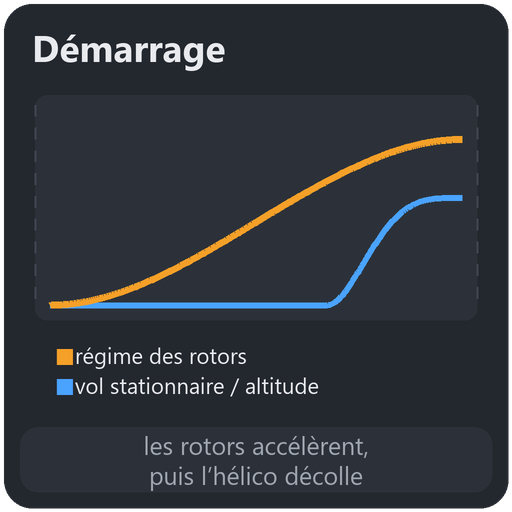
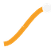
DémarrageLes rotors accélèrent sans à-coup, puis l'hélico décolle sur la fin de la rampe
Le régime suit une courbe douce de 0 à 1 pendant la « Durée de la rampe ». Le décollage (vol stationnaire) commence aux trois quarts du régime. Les rotors continuent à plein régime après la rampe.
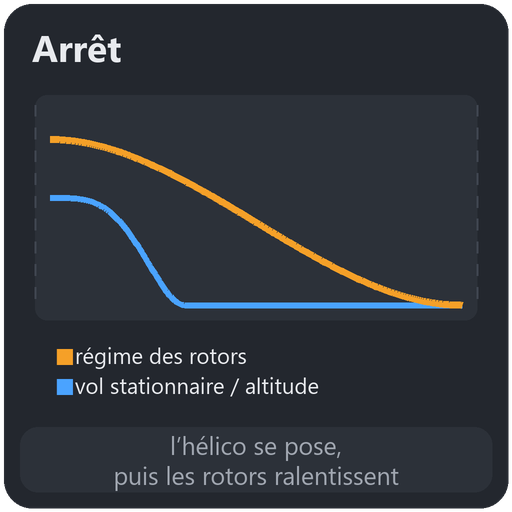
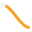
ArrêtL'hélico se pose d'abord, puis les rotors ralentissent jusqu'à l'arrêt
Inverse du démarrage : le vol stationnaire s'éteint au début de la rampe, puis les pales ralentissent et se courbent en s'arrêtant.
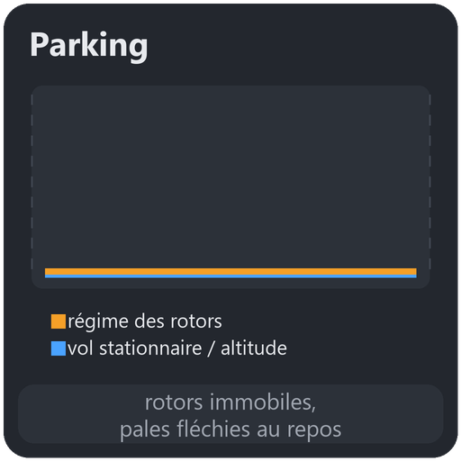
Parking
Rotors à l'arrêt, hélico posé, pales fléchies au repos
Supprime l'animation des rotors. Pratique pour un rendu fixe au sol ou pour régler la flexion.
Durée de la rampe
Durée du démarrage ou de l'arrêt, en images (24 images = 1 s à 24 i/s)
Utilisée par les modes Démarrage et Arrêt. La modifier recalcule aussitôt la rampe en cours.
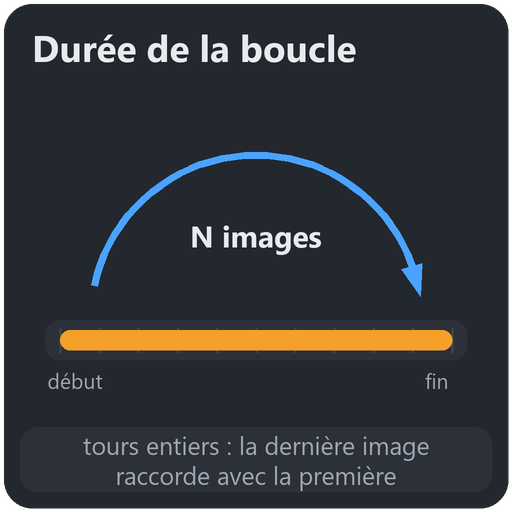
Boucle
Début et durée de l'animation : tout est calé pour boucler sans raccord
Rotors, vol stationnaire et LEDs font un nombre entier de cycles entre la première image et la dernière. La plage d'images de la scène est mise à jour automatiquement.
Image de départ
Première image de l'animation (l'image où les rotors sont à leur position de départ)
Décale toute l'animation dans la timeline, utile pour l'insérer dans un plan plus long.
Durée de la boucle
Longueur de la boucle en images. Le régime est arrondi pour faire des tours entiers
Plus la boucle est longue, plus le régime réel est proche du régime demandé. La ligne « Régime réel » sous les réglages indique la valeur obtenue.
Résultat
Durée en secondes, tours entiers obtenus et régime réel après arrondi
Le régime réel diffère légèrement du régime demandé parce que la boucle doit contenir un nombre entier de tours.
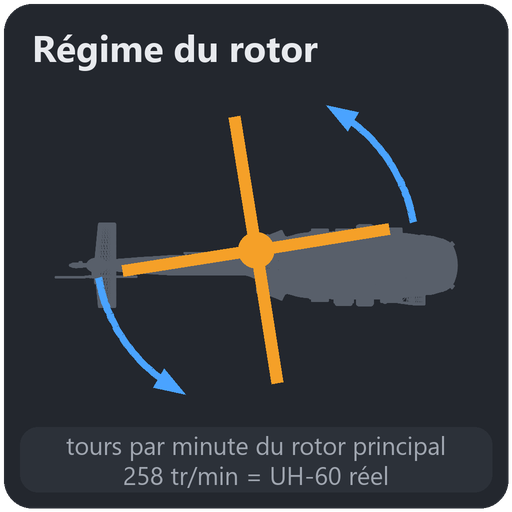
Rotors
Vitesse et sens de rotation des rotors principal et de queue
Le rotor de queue est entraîné par le principal : son nombre de tours suit le rapport de queue.
Régime réel UH-60
Règle le régime réel du UH-60 : rotor principal 258 tr/min (100 % Nr), rotor de queue ≈ 1 190 tr/min
Nr = régime nominal du rotor en vol. Pour le UH-60 : 258 tr/min, soit 4,3 tours par seconde. Avec un rotor de 16,4 m de diamètre, le bout des pales file à environ 221 m/s (Mach 0,65). Le rotor de queue tourne environ 4,6 fois plus vite : ≈ 1 190 tr/min. Ce régime reste presque constant en vol : le pilote change le pas des pales, pas la vitesse du rotor.
Régime
Vitesse du rotor principal en tours par minute. Réel UH-60 : 258 tr/min = 100 % Nr
Un vrai UH-60 tourne à environ 258 tr/min. À l'écran, un régime réel produit souvent un effet stroboscopique (les pales semblent tourner lentement ou à l'envers) : c'est normal, le flou de mouvement du rendu l'atténue.
Régime nominal (Nr)
Régime en pourcentage du régime nominal du UH-60 : 100 % = 258 tr/min
Modifie le régime en tr/min. 100 % = vol normal. Pendant un démarrage, le régime monte de 0 à 100 %.
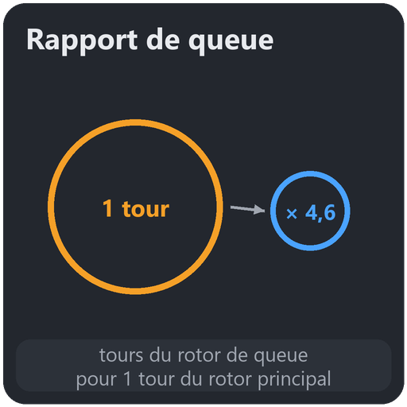
Rapport de queue
Nombre de tours du rotor de queue pour un tour du rotor principal
Le rotor de queue d'un UH-60 tourne environ 4,6 fois plus vite que le rotor principal : ≈ 1 190 tr/min.
Ce que donne ce régime
Traduit le régime : tours par seconde, degrés par image, régime du rotor de queue, vitesse du bout de pale
« Degrés par image » : rotation du rotor entre deux images du film. Avec 4 pales identiques, l'image du rotor se répète tous les 90° : à 258 tr/min et 24 i/s, le rotor tourne de 64,5° par image, ce que l'œil lit comme un recul de 25,5°. C'est l'effet « roue de chariot » des vraies vidéos d'hélicoptère : il est réaliste, et le flou de mouvement du rendu (déjà activé) le rend naturel.
La dernière ligne donne le régime à l'image courante : utile pendant un démarrage ou un arrêt.
Régime dans la vue 3D
Affiche en bas à gauche de la vue 3D le régime instantané des rotors (tr/min et % Nr), mis à jour pendant la lecture
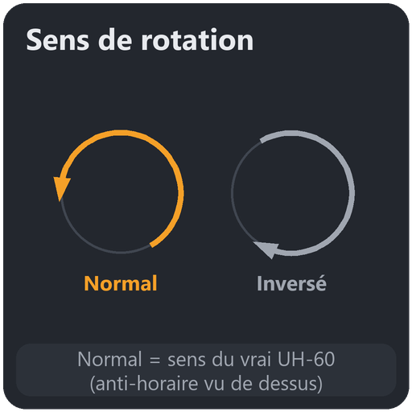
Sens principal
Sens du rotor principal. Normal = anti-horaire vu de dessus, comme le vrai UH-60
À inverser seulement pour un effet ou une autre machine.
Sens queue
Sens du rotor de queue. Normal = sens d'origine du modèle
À inverser si le rotor de queue doit tourner dans l'autre sens.
Pales
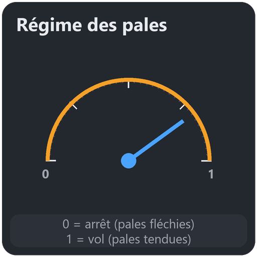
Régime des pales
Relie la forme des pales au régime : courbées à l'arrêt, tendues en vol
Animé automatiquement par les modes Démarrage et Arrêt. En Boucle il vaut 1, en Parking 0.
Régime des pales
0 = pales à l'arrêt (fléchies), 1 = pales en vol (tendues, conicité et pas appliqués)
Valeur intermédiaire : mélange progressif entre forme au repos et forme en vol. Animé par les modes Démarrage et Arrêt : dans ces modes, la valeur affichée suit la timeline.
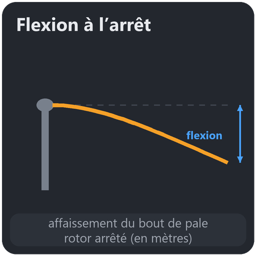
Flexion
Courbure des pales sous leur poids, à l'arrêt et en vol
Chaque pale est déformée par 8 os : la courbe suit celle d'une vraie poutre encastrée, plus forte en bout qu'à la racine. La longueur de la pale est conservée.
Flexion à l'arrêt
Affaissement du bout de pale quand le rotor est arrêté, en mètres
Mesuré au bout de la pale par rapport à une pale parfaitement droite.
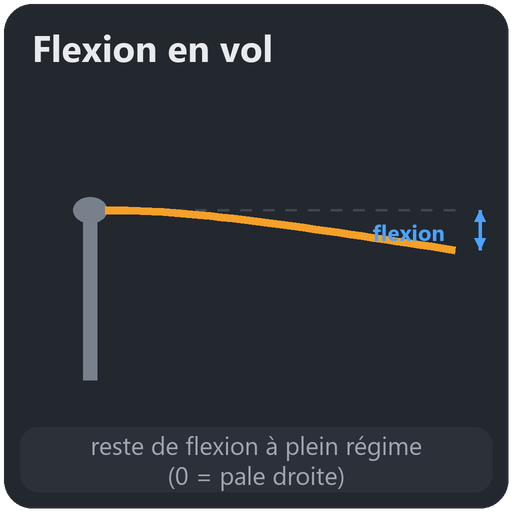
Flexion en vol
Flexion qui reste à plein régime. 0 = pale droite, négatif = pale qui se relève
En vol, la force centrifuge tend les pales. On garde un peu de flexion pour le réalisme.
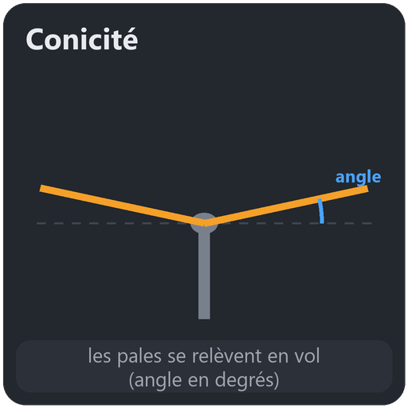
Angles des pales
Conicité, pas collectif et battement : la façon dont les pales prennent l'air
Ces angles ne s'appliquent qu'en vol : ils sont multipliés par le régime des pales.
Conicité
Les pales se relèvent en vol et forment un cône très ouvert, en degrés
Effet de la portance qui soulève les pales. Visible surtout de profil.
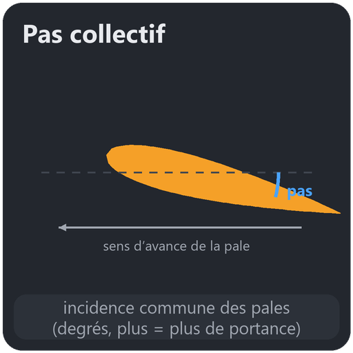
Pas collectif
Incidence commune de toutes les pales, en degrés : plus de pas = plus de portance
Fait pivoter chaque pale sur son axe. Au sol on met peu de pas, au décollage davantage.
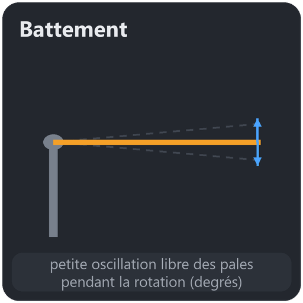
Battement
Petite oscillation des pales vers le haut et le bas pendant la rotation, en degrés
Rend le rotor moins mécanique. Chaque pale a un décalage différent.
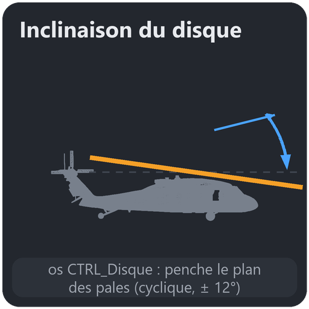
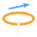
Inclinaison du disquePenche le plan des pales (commande cyclique) : l'hélico « tire » vers ce côté
Réglage porté par l'os CTRL_Disque (limité à ±12°). On peut l'animer comme n'importe quel os : pencher le disque vers l'avant pour accompagner une accélération.
Latéral
Penche le disque à gauche ou à droite. Positif : le côté gauche monte, le disque penche à droite
Rotation X de l'os CTRL_Disque.
Avant / arrière
Penche le disque vers l'avant ou l'arrière. Positif : l'avant monte, le disque penche en arrière
Rotation Z de l'os CTRL_Disque. Valeur négative = disque penché vers l'avant (accélération).
Vol
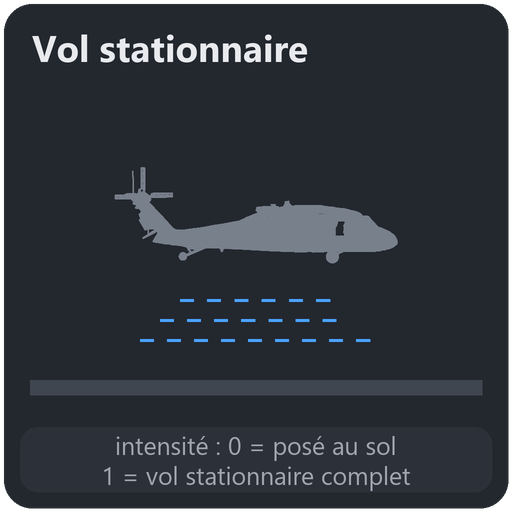
Vol stationnaire
Fait flotter l'hélico au-dessus du sol avec de petits mouvements naturels
Tous les mouvements sont calés sur la boucle (cycles entiers) : ils raccordent sans saut. Pour un vrai déplacement, animer l'os CTRL_Main.
Intensité
0 = posé au sol sans mouvement, 1 = vol stationnaire complet
Animé par les modes Démarrage (décollage) et Arrêt (atterrissage). En Boucle il vaut 1, en Parking 0.
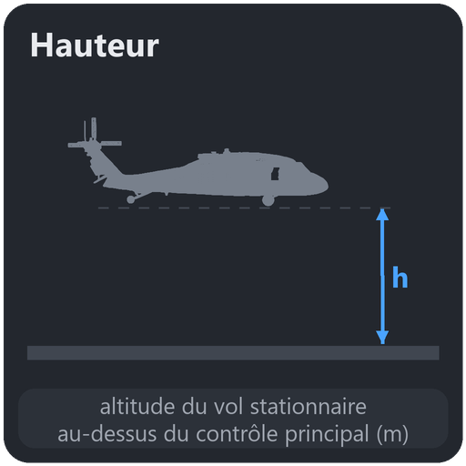
Hauteur
Altitude du vol stationnaire au-dessus de l'os CTRL_Main, en mètres
Pendant le décollage, l'hélico monte de 0 à cette hauteur.
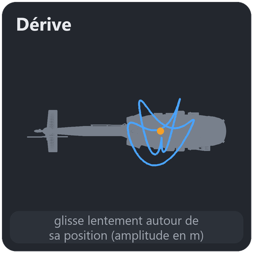
Mouvements
Amplitude des petits mouvements du stationnaire (0 = immobile)
Les mouvements combinent deux ondes de fréquences différentes pour ne pas paraître répétitifs.
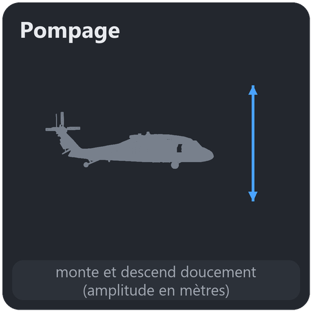
Pompage
L'hélico monte et descend doucement, amplitude en mètres
Dérive
L'hélico glisse lentement autour de sa position, amplitude en mètres
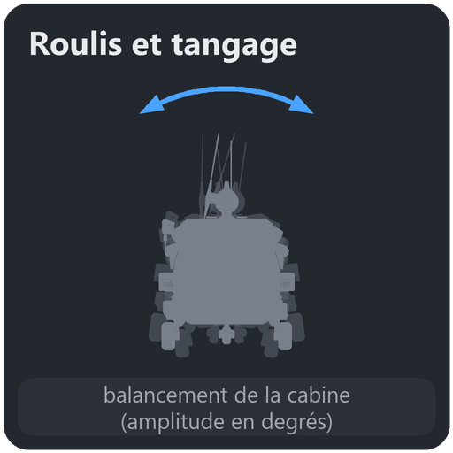
Roulis et tangage
La cabine se balance sur les côtés et d'avant en arrière, amplitude en degrés
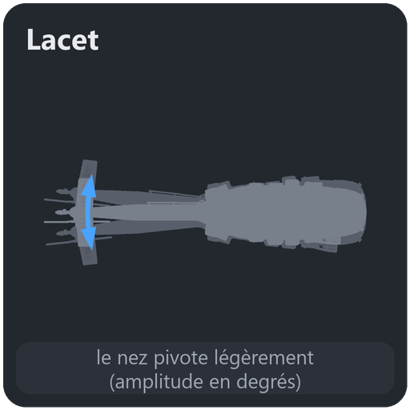
Lacet
L'hélico pivote légèrement sur lui-même, amplitude en degrés
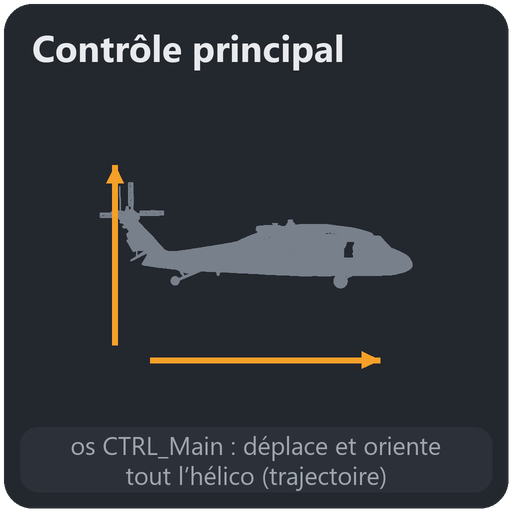
Déplacer l'hélico
Pour une trajectoire : animer l'os CTRL_Main (position et rotation)
CTRL_Main porte tout l'hélico. Le vol stationnaire s'ajoute par-dessus. L'os root (grand cercle au sol) sert à placer le rig entier dans la scène.
LEDs
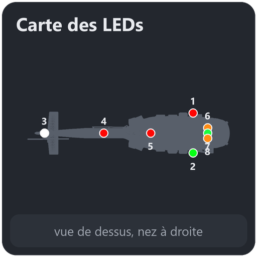
Général
Interrupteurs généraux et préréglages pour toutes les LEDs
Chaque LED a une lentille lumineuse (matériau) et une vraie source de lumière qui éclaire la carlingue.
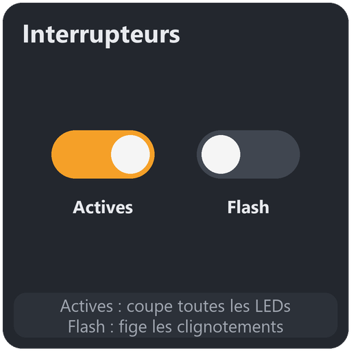
Actives
Interrupteur général : 0 = toutes les LEDs éteintes, 1 = allumées
Valeur intermédiaire = gradateur. Animable pour un allumage progressif.
Flash
0 = les LEDs clignotantes restent allumées fixes, 1 = elles clignotent
Pratique pour un rendu fixe : toutes les LEDs sont visibles quelle que soit l'image.
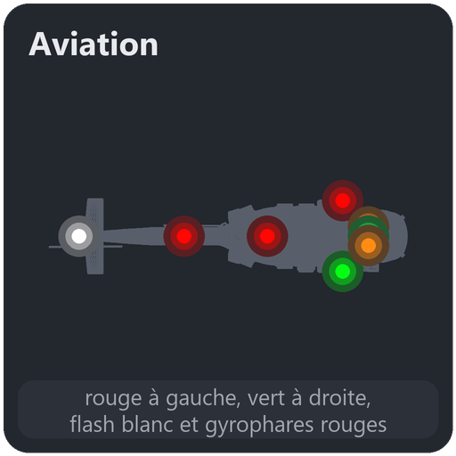
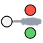
AviationRéglage réel : rouge à gauche, vert à droite, flash blanc en queue, gyrophares rouges
Remet couleurs, modes, éclats et décalages d'origine pour toutes les LEDs.
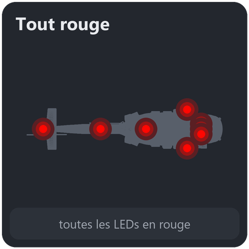
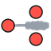
RougeToutes les LEDs en rouge (les modes ne changent pas)
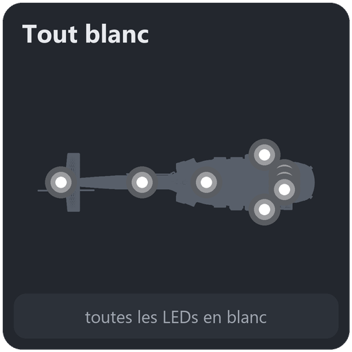
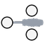
BlancToutes les LEDs en blanc (les modes ne changent pas)
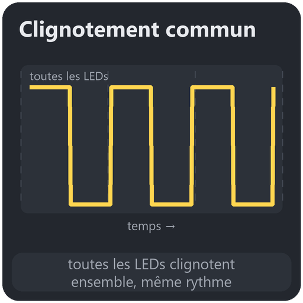
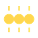
SynchroToutes les LEDs clignotent ensemble au même rythme
LEDs une par une
Réglages individuels : couleur, mode, rythme et puissance de chaque LED
Déplier une LED pour la régler. La pastille de couleur et le mode sont visibles directement dans l'en-tête.
Couleur
Couleur de la LED : appliquée à la fois à la lentille et à la lumière émise
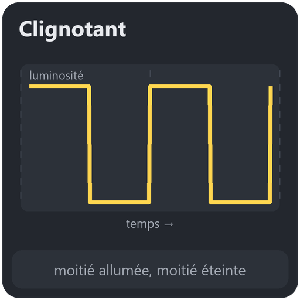
Mode
Fixe, clignotant, double flash ou gyrophare
Fixe : toujours allumée. Clignotant : moitié allumée, moitié éteinte. Double flash : deux éclats courts (feu anticollision). Gyrophare : montée et descente douces.
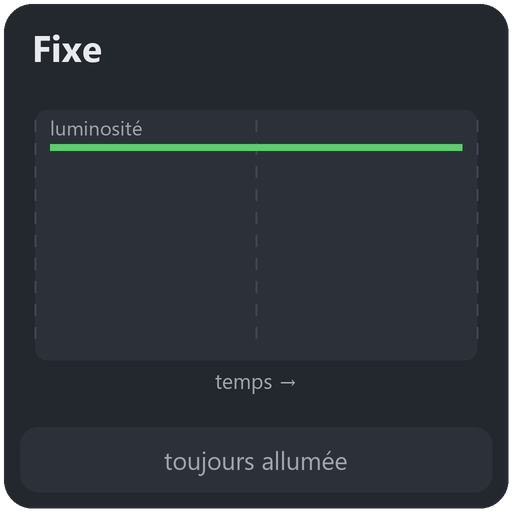
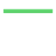
FixeToujours allumée
Clignotant
Moitié du cycle allumée, moitié éteinte
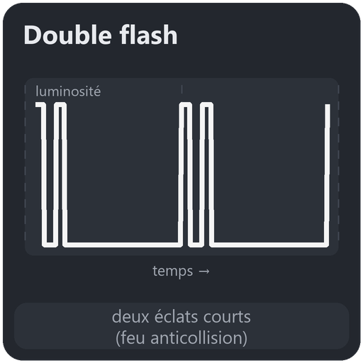
Double flash
Deux éclats courts par cycle, comme un feu anticollision
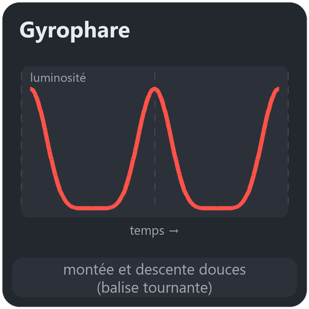
Gyrophare
Montée et descente douces, comme une balise tournante
Éclats
Nombre de cycles (éclats) pendant la boucle. Entier : la boucle reste sans raccord
Pour connaître la fréquence : éclats ÷ durée de la boucle en secondes.
Décalage
Décale le cycle de la LED : 0,5 = la LED s'allume quand l'autre s'éteint
Utile pour que deux gyrophares ne clignotent pas en même temps.
Lentille
Brillance du verre de la LED (émission du matériau), visible directement à la caméra
Lumière
Puissance de la vraie source de lumière qui éclaire la carlingue et le sol, en watts
La source est invisible à la caméra : seule la lentille se voit, la lumière éclaire autour.
| N° | Nom | Rôle |
|---|---|---|
| 1 | Nav. gauche (rouge) | Feu de navigation gauche (babord), rouge fixe |
| 2 | Nav. droite (verte) | Feu de navigation droit (tribord), vert fixe |
| 3 | Feu de queue | Feu de queue : double flash blanc anticollision |
| 4 | Gyro ventral | Gyrophare rouge sous le fuselage |
| 5 | Gyro dorsal | Gyrophare rouge sur le dessus de la cabine |
| 6 | Cockpit gauche | Voyant de la planche de bord, côté gauche |
| 7 | Cockpit centre | Voyant de la planche de bord, au centre |
| 8 | Cockpit droit | Voyant de la planche de bord, côté droit |
Portes
Toutes les portes
Ouvre ou ferme les quatre portes d'un clic, ou crée l'animation d'ouverture
Le UH-60 a deux portes de cockpit à charnières (pilote à droite, copilote à gauche) et deux grandes portes de cabine qui coulissent vers l'arrière. Chaque porte a un curseur de 0 (fermée) à 1 (ouverte) que l'on peut animer avec des images clés.
Tout ouvrir
Ouvre les portes choisies. Si elles sont animées, une image clé est ajoutée à l'image courante
Tout fermer
Ferme les portes choisies. Si elles sont animées, une image clé est ajoutée à l'image courante
Portes concernées
Choisit les portes que les boutons ouvrent, ferment ou animent
Animer l'ouverture
Crée deux images clés : la porte part de son état actuel à l'image courante et arrive au bout de la durée choisie
Le départ et l'arrivée sont adoucis (courbe en S), comme une porte poussée à la main. Les clés s'ajoutent à l'animation existante : on peut enchaîner ouverture puis fermeture plus loin dans la timeline.
Animer la fermeture
Comme « Animer l'ouverture », mais la porte se referme au bout de la durée choisie
Durée
Durée de l'ouverture ou de la fermeture animée (24 images = 1 s à 24 i/s)
Clé sur les portes
Enregistre l'ouverture actuelle des quatre portes comme image clé, à l'image courante
Effacer l'animation
Supprime les images clés des quatre portes (elles gardent leur position actuelle)
Portes cockpit
Portes pilote et copilote : charnières à l'avant, elles pivotent vers l'extérieur
Chaque porte tourne autour de l'axe de ses deux charnières avant, légèrement penché comme le flanc du cockpit. 0 = fermée, 1 = ouverte à l'« Angle d'ouverture ».
Gauche (copilote)
Ouverture de la porte cockpit gauche, côté copilote : 0 = fermée, 1 = ouverte
Droite (pilote)
Ouverture de la porte cockpit droite, côté pilote (sur le UH-60, le commandant de bord est à droite) : 0 = fermée, 1 = ouverte
Angle d'ouverture
Angle atteint par les portes cockpit quand leur curseur vaut 1
Portes cabine
Grandes portes coulissantes : elles s'écartent du fuselage puis glissent vers l'arrière sur leurs rails
Pendant les premiers 12 % du curseur, la porte s'écarte de l'« Écart sur rails » (elle sort de son cadre). Ensuite elle glisse vers l'arrière de toute la « Course ». Ouverte, elle dégage le passage de la cabine (environ 1,7 m de large sur le vrai UH-60).
Gauche
Ouverture de la porte cabine gauche : 0 = fermée, 0,12 = sortie du cadre, 1 = complètement ouverte
Droite
Ouverture de la porte cabine droite : 0 = fermée, 0,12 = sortie du cadre, 1 = complètement ouverte
Course
Distance parcourue vers l'arrière par les portes cabine complètement ouvertes
Écart sur rails
De combien la porte cabine s'écarte du fuselage avant de glisser
Ajouter les portes à ce rig
Rend ce rig compatible avec l'onglet Portes : sépare les portes gauche et droite et crée leurs charnières et glissières
Pour les fichiers faits avec la version 1.0 ou 1.1 du rig. Les objets BH_Portes_Cockpit et BH_Portes_Cabine sont remplacés par quatre portes indépendantes, sans bouger à l'écran. Annulable avec Ctrl+Z.
Modèle UH-60
Modèle UH-60
Le plugin pilote le modèle 3D du UH-60 : on le télécharge une fois, puis on l'ajoute à n'importe quelle scène
Le modèle est téléchargé depuis la page de publication du plugin, vérifié (taille et empreinte SHA-256) puis rangé dans le dossier utilisateur de l'extension. « Ajouter à la scène » importe la collection « UH-60 Black Hawk » au curseur 3D : maillages texturés, rig, portes et LEDs.
Télécharger le modèle
Télécharge le modèle UH-60 et ses textures, puis l'installe pour le plugin (une seule fois)
Mettre à jour le modèle
Télécharge à nouveau la dernière version publiée du modèle
Ajouter à la scène
Ajoute l'hélico complet au curseur 3D : maillages texturés, rig, portes et LEDs
On peut l'ajouter plusieurs fois : chaque hélico a son propre rig et le panneau pilote celui qui est sélectionné.
Avec studio et caméras
Ajoute aussi les quatre lumières de studio, les quatre caméras et le monde du modèle
Installer depuis un fichier
Installe le modèle à partir de l'archive .zip déjà téléchargée (sans connexion)
Ouvrir le dossier
Ouvre le dossier où le modèle est installé
Accès en ligne désactivé
Blender bloque les connexions. Autoriser : Préférences › Système › Réseau › Autoriser l'accès en ligne
Contrôles du rig
Contrôles du rig
Les os à manipuler à la main : un clic les sélectionne en mode Pose
root
Grand cercle au sol : place le rig entier dans la scène
CTRL_Main
Contour de l'hélico : trajectoire et orientation de l'appareil
CTRL_Disque
Croix au-dessus du rotor : inclinaison du disque (rotations X et Z, ±12°)
CTRL_Rotor
Cercle du mât : décalage manuel de l'angle du rotor principal (rotation Y)
CTRL_Queue
Cercle de queue : décalage manuel de l'angle du rotor de queue (rotation Y)
Propriétés brutes de BH_Rig
Le panneau Item › Properties de Blender (et Propriétés de l'objet › Custom Properties) affiche les réglages sous leur nom technique. Ils ont maintenant tous une info-bulle française, mais l'onglet Black Hawk reste la façon simple de les régler.
| Nom technique | Signification | Dans le panneau |
|---|---|---|
anim_mode | Mode d'animation choisi (LOOP, STARTUP, SHUTDOWN, PARKED) | Animation |
bh_rig | Marqueur du rig (ne pas supprimer) | - |
rpm | Régime du rotor principal (tr/min) | Animation › Rotors |
tail_ratio | Rapport de queue | Animation › Rotors |
rotor_dir / tail_dir | Sens des rotors (1 normal, -1 inversé) | Animation › Rotors |
loop_start / loop_frames | Image de départ / durée de la boucle | Animation › Boucle |
ramp_frames | Durée de la rampe démarrage / arrêt | Animation › Mode |
spool | Régime des pales 0-1 | Pales |
droop_rest / droop_flight | Flexion à l'arrêt / en vol (m) | Pales › Flexion |
coning / collective / blade_wobble | Conicité / pas collectif / battement (°) | Pales › Angles |
hover_on / hover_height | Intensité / hauteur du stationnaire | Vol |
hover_z / hover_xy | Pompage / dérive (m) | Vol › Mouvements |
hover_tilt / hover_yaw | Roulis-tangage / lacet (°) | Vol › Mouvements |
leds_on / leds_blink | Interrupteurs généraux des LEDs | LEDs › Général |
led_NN_color, _mode, _cycles, _phase, _glow, _watts | Réglages de la LED n° NN | LEDs › une par une |
rotor_turns, tail_turns, loop_phase, led_NN_t, led_NN_level | Valeurs calculées (animées ou pilotées) : ne pas modifier | - |
led_NN_*_def, led_names | Valeurs d'origine (préréglage Aviation) et liste des LEDs | - |
door_cockpit_l / door_cockpit_r | Ouverture des portes cockpit gauche (copilote) / droite (pilote), 0 à 1 | Portes › Portes cockpit |
door_cabin_l / door_cabin_r | Ouverture des portes cabine gauche / droite, 0 à 1 | Portes › Portes cabine |
door_cockpit_angle | Angle d'ouverture complète des portes cockpit (°) | Portes › Portes cockpit |
door_cabin_travel / door_cabin_out | Course vers l'arrière / écart sur rails des portes cabine (m) | Portes › Portes cabine |
door_cabin_*_def, bh_doors, bh_model | Valeurs d'origine des portes, marqueur des portes et version du modèle | - |
Dépannage
| L'onglet Black Hawk n'apparaît pas | Vérifier que le plugin est activé dans les préférences, puis appuyer sur N dans la vue 3D. |
| « Aucun UH-60 dans la scène » | Télécharger le modèle puis « Ajouter à la scène » (onglet visible même sans hélico), ou ouvrir un fichier qui contient l'armature BH_Rig. |
| Le téléchargement échoue | Autoriser l'accès en ligne (Preferences › System › Network). Sinon, installer l'archive avec « Installer depuis un fichier ». Une archive abîmée est refusée (empreinte SHA-256). |
| L'onglet Portes propose « Ajouter les portes à ce rig » | Fichier fait avec la version 1.0 ou 1.1 : un clic sépare les portes et crée charnières et glissières, sans rien déplacer (Ctrl+Z pour annuler). |
| Une porte ne bouge plus avec le curseur | Elle est animée : la timeline impose sa valeur. Utiliser « Effacer l'animation » ou déplacer la tête de lecture avant de poser une nouvelle clé. |
| Les pales semblent tourner lentement ou à l'envers | Effet stroboscopique normal à 258 tr/min ; le flou de mouvement du rendu Cycles le lisse. Pour un rotor lisible à l'œil, baisser le régime (irréaliste). |
| Un réglage revient tout seul à sa valeur | Il est animé par le mode (Régime des pales, Intensité du vol en Démarrage / Arrêt). Passer en mode Boucle pour le régler librement. |
| Saut visible quand la vidéo boucle | Garder des « Éclats » entiers et relancer le mode Boucle après avoir changé la durée. |
| Tout remettre d'origine | Onglet Aide › Tout réinitialiser (ou le bouton Réinitialiser en bas de chaque onglet). |